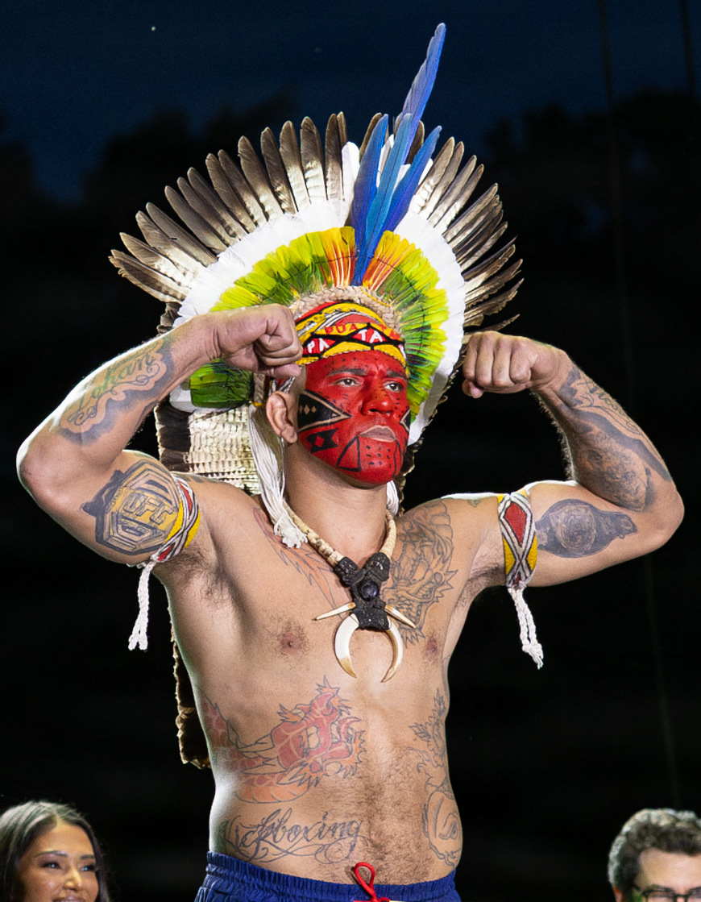

ALEXPOATANPEREIRA

Kickboxing + MMA
na carreira
Glory + UFC
no UFC
SANGUE PATAXÓ,
MÃOS DE PEDRA
Alex Sandro Silva Pereira nasceu em 7 de julho de 1987, na favela do Batistini, em São Bernardo do Campo (SP). Saiu da escola cedo para trabalhar como ajudante de pedreiro e, aos 19 anos, já lutava contra o alcoolismo. Foi no kickboxing que encontrou a disciplina que mudaria tudo.
Seu primeiro mestre, Belocqua Wera, o ajudou a redescobrir sua ancestralidade indígena Pataxó — e o batizou com o nome de guerra que o mundo aprenderia a temer. Hoje, Poatan entra nas arenas do mundo com o cocar e a pintura de guerra, levando a cultura indígena brasileira ao maior palco do esporte.

DA BORRACHARIA
À IMORTALIDADE
O primeiro passo
Funcionário de uma borracharia, Alex entra numa academia de kickboxing para vencer o alcoolismo. Nasce um lutador — e um novo destino.
O carrasco de Adesanya
Vence Israel Adesanya por decisão e depois o apaga com um nocaute brutal de esquerda — até hoje, o único homem a nocautear Adesanya. No mesmo ano, conquista o cinturão dos médios do Glory.
História no Glory
Conquista o cinturão dos meio-pesados e se torna o primeiro duplo campeão simultâneo da história do Glory Kickboxing. Encerra a carreira no kickboxing com 33 vitórias e 21 nocautes.
Campeão do UFC em 4 lutas
No Madison Square Garden, UFC 281: derruba Adesanya no 5º round e conquista o cinturão dos médios em apenas sua 4ª luta no UFC. "CHAMA" vira grito de guerra mundial.
Duplo campeão
Sobe para os meio-pesados e finaliza o ano nocauteando Jiří Procházka no UFC 295. Torna-se o campeão de duas divisões mais rápido da história do UFC — em apenas 8 lutas.
O rei dos eventos numerados
Três defesas de cinturão em seis meses: Jamahal Hill (UFC 300), Procházka (UFC 303) e Rountree (UFC 307). Todas por nocaute. O lutador mais popular do planeta.
A reconquista
Perde o título para Ankalaev em março — e o retoma no UFC 320 com um nocaute avassalador em 80 segundos. A vingança perfeita.
Rumo ao impossível
Vaga o cinturão e sobe aos pesos-pesados atrás de um feito inédito: ser o primeiro tricampeão de divisões diferentes da história do UFC. A caçada continua. Chama.
QUATRO CINTURÕES,
DUAS ERAS
Médio
Um dos reinados mais destrutivos da história do kickboxing, com 5 defesas de título.
Meio-Pesado
Primeiro lutador da história do Glory a segurar dois cinturões ao mesmo tempo.
Médio
TKO sobre Israel Adesanya no 5º round. Título mundial na 4ª luta dentro do UFC.
Meio-Pesado
Duas vezes campeão da divisão. O duplo campeão mais rápido da história do UFC.
A LENDA EM IMAGENS


A pedra não pergunta se pode quebrar.— O espírito de Poatan
Ela simplesmente quebra.
VAMOS CRIAR ALGO
LENDÁRIO
Esta página é uma demonstração do meu trabalho em design e desenvolvimento web: direção de arte, animação, interações 3D e performance. Se você busca uma presença digital com esse nível de acabamento, vamos conversar.
INICIAR UM PROJETO